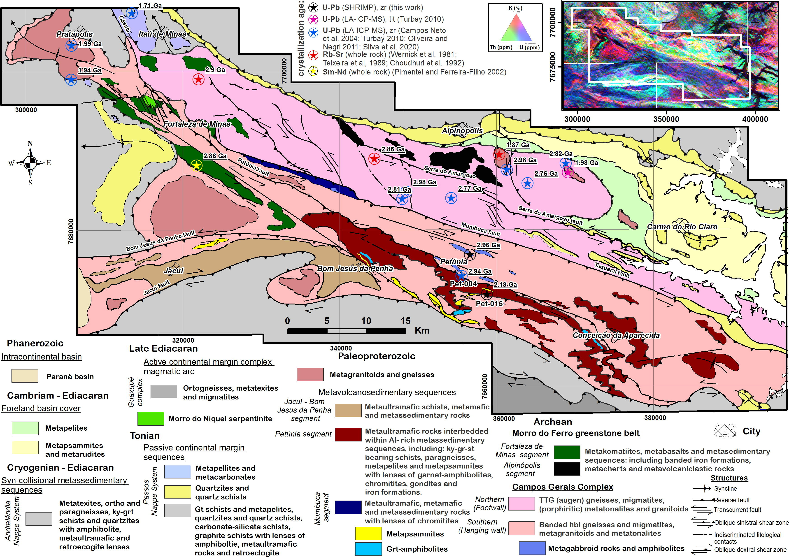

Archean-Ediacaran evolution of the Campos Gerais Domain - A reworked margim of the São Francisco paleocontinent (SE Brazil): Constraints from metamafic-ultramafic rocks

Resumo em Português
O Domínio Campos Gerais (DCG), no sudeste do Brasil, é uma área de aproximadamente 180 × 35 km de rochas Arqueanas-Proterozoicas localizada a sudoeste do Cráton São Francisco (CSF). A evolução Arqueana-Paleoproterozoica do DCG — bem como sua potencial correlação com o CSF ou outros blocos cratônicos da região — é atualmente pouco delimitada. São apresentados os resultados de petrografia sistemática, geoquímica de rocha total, química mineral e geocronologia para um conjunto de rochas máficas-ultramáficas pouco estudadas do DCG, complementados por uma compilação de dados geoquímicos e de química mineral de espinélio de rochas máficas-ultramáficas em todo o DCG e informações geocronológicas para diversos litotipos da região. O DCG registra uma evolução crustal prolongada do Mesoarqueano ao Estateriano (3,1–1,7 Ga), interpretada como compartilhando uma história comum com o CSF meridional e seus segmentos retrabalhados, sugerindo que o DCG é uma extensão para oeste desse terreno cratônico. As rochas metavulcano-sedimentares dos segmentos Fortaleza de Minas e Alpinópolis representam um greenstone belt Mesoarqueano estratigráfica e quimicamente comparável a greenstone belts Arqueanos em todo o mundo, coevo a um conjunto local de gnaisses e migmatitos TTG. Dados U-Pb SHRIMP em zircão de um metagabro subalcalino forneceram idade concórdia de ~2,96 Ga, revelando uma fase de magmatismo Arqueano previamente não reconhecida no DCG que pode ser cronocorrelacionada com a geração de metakomatiito e TTG no paleocontinente São Francisco. Os dados contradizem a hipótese de que as rochas metavulcano-sedimentares dos segmentos Jacuí–Bom Jesus da Penha e Petúnia representam um ofiolito, apresentando em vez disso características que apontam para formação associada a um arco continental. Uma idade de cristalização U-Pb (SHRIMP) de ~2,13 Ga em zircão de uma rocha metaultramáfica destaca um evento magmático cronocorrelacionado com a principal fase acrecionária da Orogenia Minas. Por fim, uma idade concórdia U-Pb (SHRIMP) de ~590 Ma — obtida em grãos de zircão de textura metamórfica de uma rocha metaultramáfica — aponta para uma sobreposição metamórfica tardia relacionada a condições de anfibolito superior, ativação de falhas frágeis e justaposição de blocos crustais associados aos estágios finais da amalgamação do Gondwana Ocidental no CSF meridional.